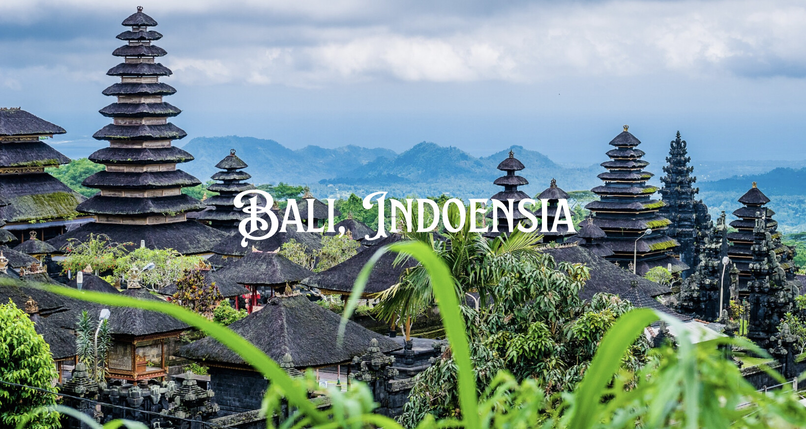

Explore Indonesian Destinations
| Destination | Description |
|---|---|

Bali |
Pulau Bali adalah destinasi pariwisata yang terkenal di Indonesia, menawarkan kombinasi yang sempurna antara keindahan alam, budaya yang kaya, dan kehidupan malam yang dinamis. Terkenal dengan pantai-pantai eksotisnya seperti Kuta, Seminyak, dan Jimbaran yang menawarkan pemandangan matahari terbenam yang memukau serta ombak yang ideal untuk berselancar. Selain itu, Bali juga dikenal dengan sawah teraseringnya yang memikat, seperti di Ubud dan Jatiluwih, yang merupakan warisan budaya dunia UNESCO. |

Candi Borobudur |
Candi Borobudur, yang terletak di Magelang, Jawa Tengah, adalah salah satu peninggalan bersejarah terbesar di dunia dan menjadi salah satu destinasi wisata budaya paling terkenal di Indonesia. Candi ini dibangun pada abad ke-9 Masehi sebagai monumen Buddha Mahayana, dan kini menjadi situs warisan dunia UNESCO yang menarik ribuan pengunjung setiap tahunnya. |
Sumatra |
Destinasi Sumatra memiliki kekayaan budaya yang kaya, termasuk rumah adat yang mencerminkan keunikan etnis dan kehidupan masyarakatnya. Salah satu rumah adat yang terkenal adalah rumah adat Batak Toba, dengan ciri khas atap limas tinggi dan ukiran kayu yang indah, mewakili kekayaan seni dan nilai-nilai budaya orang Batak. Di daerah Minangkabau, rumah adatnya memiliki atap berbentuk tanduk kerbau yang melambangkan kekuatan dan kesejahteraan, serta dikenal dengan keindahan ukiran dan tata ruang interior yang simetris. |
Lombok |
Pulau Lombok, yang terletak di sebelah timur Bali, menawarkan pesona alam yang memikat dengan pantai-pantai yang mempesona dan ombak yang ideal untuk berselancar. Terkenal dengan keindahan Gili Islands yang terletak di sekitarnya, pulau ini juga menawarkan pemandangan gunung-gunung yang hijau dan air terjun yang menakjubkan di bagian dalamnya. Budaya Sasak yang kaya dan keramahan penduduknya menambah daya tarik wisata pulau ini, memberikan pengalaman yang otentik bagi para pengunjung. |
Komodo Island |
Pulau Komodo, yang terletak di kepulauan Indonesia, terkenal dengan habitat uniknya yang dihuni oleh biawak Komodo, spesies kadal terbesar di dunia. Biawak ini dikenal karena ukurannya yang besar dan penampilannya yang purba. Pulau Komodo juga menawarkan pemandangan alam yang memukau, dengan bukit-bukit yang terjal, savana luas, dan pantai-pantai indah yang dikelilingi oleh air laut yang jernih. Selain menjadi tempat tinggal bagi biawak terkenal, pulau ini juga merupakan surga bagi penyelam, dengan keanekaragaman hayati laut yang kaya, terumbu karang yang indah, dan kehidupan laut yang melimpah. |
Gunung Bromo |
Gunung Bromo adalah salah satu destinasi alam yang paling terkenal di Indonesia, terletak di Taman Nasional Bromo Tengger Semeru, Jawa Timur. Gunung ini dikenal dengan pemandangan kawahnya yang spektakuler, di tengah lautan pasir yang luas. Pendakian ke Gunung Penanjakan pada pagi hari sangat populer untuk menyaksikan matahari terbit, memberikan panorama indah dengan latar belakang Gunung Bromo dan Gunung Semeru yang menjulang. Bukan hanya pemandangan alamnya yang menakjubkan, Gunung Bromo juga memiliki nilai budaya yang tinggi dalam tradisi masyarakat Tengger yang tinggal di sekitarnya. Setiap tahun, mereka melakukan upacara Yadnya Kasada sebagai bagian dari kepercayaan dan ritual keagamaan mereka. |